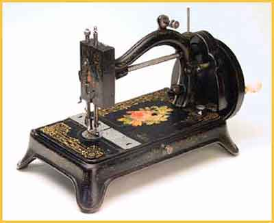

In an advertisement for Johnson, Clark & Co. from the 1877 Trade Press, there are shown "The Home Companion", "The Improved Home Shuttle" and the "Original Form". This "Original Form" also known as the Dolly Varden, could be the earliest Home Shuttle.
The picture on an instruction leaflet for the Home Shuttle Family Sewing Machine, added by Claire Sherwell, also shows an example of the "Original Form".
As a result of the survey, we obtained 5 photographs of this type with typical features of early and later machines. These are shown and discussed below.
This machine, which belongs to Gildo Bosi,
Italy, with the last patent date from 1850 on the front plate, seems to
be the earliest. The thin face plate shows the patent dates. The needlebar
is not enclosed. The adjusting lever for the stitch length is to be seen
under the sewing plate in front of the feed mechanism. The bobbin winder
is on the right side on the machine bed. On the underside of the front slide
plate is written: "Manuf'd by the GOLD MEDAL S M Cº".
The sewing head (needlebar) on this example
is enclosed. The last patent date shown is from 1856, and the adjusting
lever for the stitch length is the same as on machine No. 1. The bobbin
winder is now higher, near the top. The patent dates on this machine are
to found on the rear slide plate. Under the front slide plate as on machine
No. 1 is stamped "Manuf'd by the GOLD MEDAL S M Cº".
This beautiful machine, also from Gildo Bosi,
is the same as No. 2 but with a decal saying "Improved Dolly Varden"
in the middle of the machine bed.
The bed of this machine, which is a treadle
head belonging to Eleanor Beck, is rectangular. All other features are the
same as those on machines Nos. 2 & 3.
A similar machine as No. 4 is shown on page 87 in Carter Bays' book, dated c.1875. But this machine shows clear differences; there is an additional round stitch plate and the adjusting lever for the stitch length is now on the right site of the machine bed. From there on the underside of the bed is a long curved connecting rod towards the feed.
The following machines (Nos. 5, 6 and 7) show these same changes/improvements.
Machine #5 shows a treadle head with these
improvements. This machine belongs to Fred Switzer

These are the Home Shuttles which prompted
the survey. Their names have been found, they are respectively, the Improved
Home Shuttle and the Home Companion, from Johnson, Clark & Co.
These machines have neither names nor serial numbers on them, only R. K. & Co. stamped on their front slides. Chrys Günther and Claire Sherwell have discovered that R.K. & Co. could possibly stand for Rennick, Kemsley & Co, a British distributor. There were no other machines in the survey with R. K. & Co stamped on them.
The Home Shuttle Survey has produced much
interesting information for me. Many thanks to the NeedleBar group especially
to Eleanor Beck, Gildo Bosi, Barbara Covington, Chrys Günther, Claire
Sherwell, and last but not least to Alan Quinn.
I now know where both machines originate and their names. Beside this I also know that the Dolly Varden is the earliest of this group.
But it is still not certain who R. K. & Co. are, so this must remain a mystery for the time being.